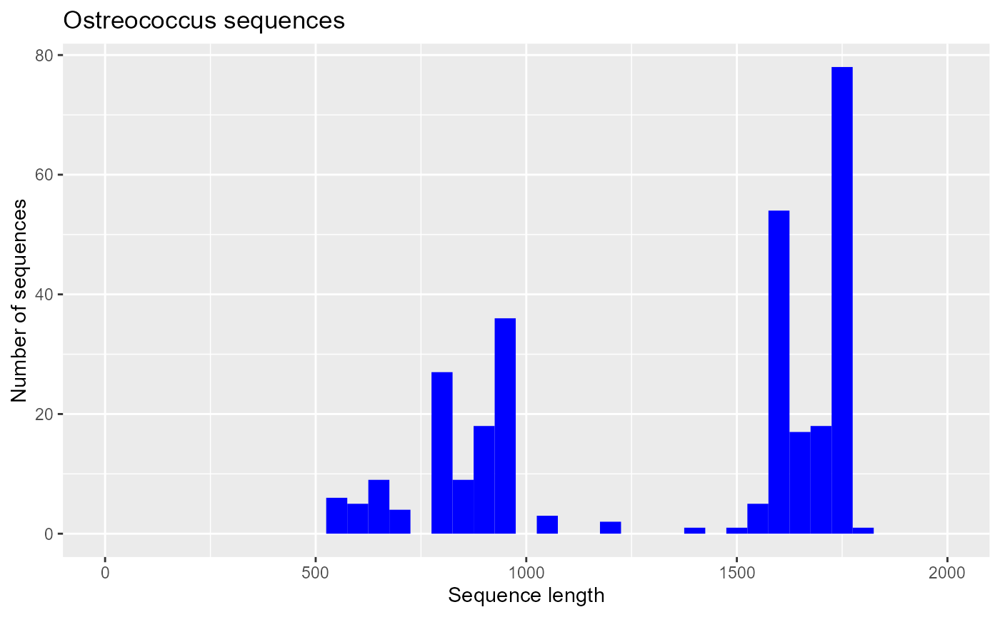
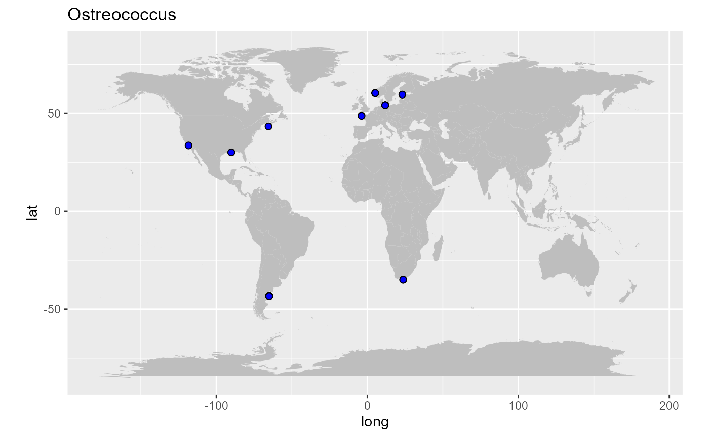
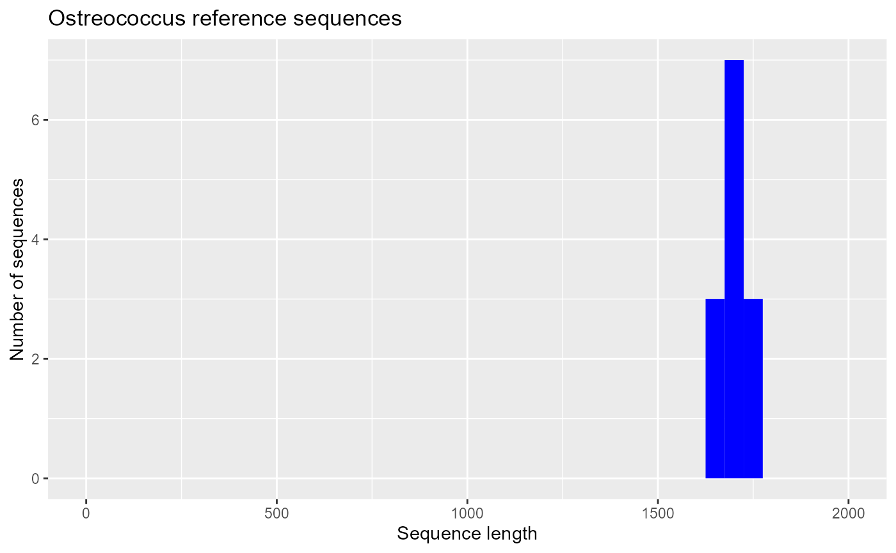

The PR2 database is provided as a R package called pr2database. This page provides instruction to install and use the package.
Installation
From GitHub
Install from the GitHub web site using the devtools package
install.packages(devtools)
devtools::install_github("pr2database/pr2database")* installing *source* package 'pr2database' ...
** R
** data
*** moving datasets to lazyload DB
** byte-compile and prepare package for lazy loading
** help
*** installing help indices
converting help for package 'pr2database'
finding HTML links ... fini
pr2 html
** building package indices
** testing if installed package can be loaded
*** arch - i386
*** arch - x64
* DONE (pr2database)
In R CMD INSTALLNote: You may have to install some packages required by pr2database if they are not installed on your machine
Launch shiny interface
pr2database::run_app()Analysing the database using R
Loading the database
The PR2 database is provided as a function that returns data frame (or a tibble). This is a join between the following tables:
- pr2_main
- pr2_taxonomy
- pr2_sequence
- pr2_metadata
- pr2_traits
- pr2_silva
- eukribo
library("pr2database")
pr2 <- pr2_database()
# List of the different columns available - see the help of the package for information on each field
colnames(pr2)
#> [1] "pr2_accession" "domain"
#> [3] "supergroup" "division"
#> [5] "subdivision" "class"
#> [7] "order" "family"
#> [9] "genus" "species"
#> [11] "genbank_accession" "start"
#> [13] "end" "label"
#> [15] "gene" "organelle"
#> [17] "reference_sequence" "added_version"
#> [19] "edited_version" "edited_by"
#> [21] "edited_remark" "remark"
#> [23] "mixoplankton" "seq_id"
#> [25] "sequence" "sequence_length"
#> [27] "ambiguities" "sequence_hash"
#> [29] "gb_date" "gb_division"
#> [31] "gb_definition" "gb_organism"
#> [33] "gb_organelle" "gb_taxonomy"
#> [35] "gb_strain" "gb_culture_collection"
#> [37] "gb_clone" "gb_isolate"
#> [39] "gb_isolation_source" "gb_specimen_voucher"
#> [41] "gb_host" "gb_collection_date"
#> [43] "gb_environmental_sample" "gb_country"
#> [45] "gb_lat_lon" "gb_collected_by"
#> [47] "gb_note" "gb_publication"
#> [49] "gb_authors" "gb_journal"
#> [51] "eukref_name" "eukref_source"
#> [53] "eukref_env_material" "eukref_env_biome"
#> [55] "eukref_biotic_relationship" "eukref_specific_host"
#> [57] "eukref_geo_loc_name" "eukref_notes"
#> [59] "pr2_sample_type" "pr2_sample_method"
#> [61] "pr2_latitude" "pr2_longitude"
#> [63] "pr2_depth" "pr2_ocean"
#> [65] "pr2_sea" "pr2_sea_lat"
#> [67] "pr2_sea_lon" "pr2_country"
#> [69] "pr2_location" "pr2_location_geoname"
#> [71] "pr2_location_geotype" "pr2_location_lat"
#> [73] "pr2_location_lon" "pr2_sequence_origin"
#> [75] "metadata_remark" "pr2_continent"
#> [77] "pr2_country_geocode" "pr2_country_lat"
#> [79] "pr2_country_lon" "eukribo_UniEuk_taxonomy_string"
#> [81] "eukribo_V4" "eukribo_V9"
#> [83] "silva_taxonomy" "organelle_code"Install and load the libraries
The following examples makes use of the specifc R libraries
Install the libraries
install.packages("dplyr") # For filtering the data
install.package("ggplot2") # To plot data
install.package("maps") # To plot maps
source("https://bioconductor.org/biocLite.R") # This package is on Bioconductor
biocLite("Biostrings") # To save fasta filesLoad the libraries
Selecting sequences from a specific taxon
Let us select all the available sequences for the Mamiellophyceae Ostreococcus
# Filter only the sequences for which the column genus contains Ostreococcus
pr2_ostreo <- pr2 %>%
dplyr::filter(genus == "Ostreococcus")
# Select only the columns of interest
pr2_ostreo <- pr2_ostreo %>%
dplyr::select( genbank_accession, species,
pr2_sample_type, gb_strain, gb_clone,
pr2_latitude, pr2_longitude,
sequence_length, sequence, reference_sequence,
eukribo_UniEuk_taxonomy_string)
pr2_ostreo
#> # A tibble: 294 × 11
#> genbank_acc…¹ species pr2_s…² gb_st…³ gb_cl…⁴ pr2_l…⁵ pr2_l…⁶ seque…⁷ seque…⁸
#> <chr> <chr> <chr> <chr> <chr> <dbl> <dbl> <int> <chr>
#> 1 AF525872 Ostreo… enviro… NA UEPACI… NA NA 1766 ACCTGG…
#> 2 EU562149 Ostreo… enviro… NA IND2.6 NA NA 836 AAAGCT…
#> 3 AY425309 Ostreo… enviro… NA RA0104… NA NA 1728 GCCAGT…
#> 4 GQ426346 Ostreo… culture CB6 NA NA NA 1652 AGCCAT…
#> 5 KC583118 Ostreo… enviro… NA RS.12f… NA NA 1764 CCTGGT…
#> 6 JN862906 Ostreo… culture BCC480… NA NA NA 1568 GCGTAA…
#> 7 JQ692065 Ostreo… enviro… NA PUPF_60 -43.3 -65.0 1598 TACTGT…
#> 8 FR874749 Ostreo… enviro… NA 1815F12 60.3 5.22 1765 ACCTGG…
#> 9 FJ431431 Ostreo… enviro… NA RA0710… NA NA 821 TACCCA…
#> 10 EU561670 Ostreo… enviro… NA IND1.11 -35.0 23.7 872 AAAAGC…
#> # … with 284 more rows, 2 more variables: reference_sequence <int>,
#> # eukribo_UniEuk_taxonomy_string <chr>, and abbreviated variable names
#> # ¹genbank_accession, ²pr2_sample_type, ³gb_strain, ⁴gb_clone, ⁵pr2_latitude,
#> # ⁶pr2_longitude, ⁷sequence_length, ⁸sequenceExporting the sequences to fasta
We will save the Ostreococcus sequences to a FASTA file. This is easy done with the bioconductor package BioStrings.
# Importing the sequence in a Biostring set
seq_ostreo <- Biostrings::DNAStringSet(pr2_ostreo$sequence)
# Constructing the name of each sequecne (the first line of the fasta file)
# using the genbank accession, species name, strain name and clone name
names(seq_ostreo) <- paste(pr2_ostreo$genbank_accession, pr2_ostreo$species,
"strain",pr2_ostreo$gb_strain,
"clone",pr2_ostreo$gb_clone,
sep="|")
# Displaying the Biostring set
seq_ostreo
#> DNAStringSet object of length 294:
#> width seq names
#> [1] 1766 ACCTGGTTGATCCTGCCAGTAG...AGGTGAACCTGCAGAAGGATCA AF525872|Ostreoco...
#> [2] 836 AAAGCTCGTAGTCGGATTTTGG...TCTGGGCCGCACGCGCGCTACA EU562149|Ostreoco...
#> [3] 1728 GCCAGTAGTCATATGCTTGTCT...GAGAAGTCGTAACAAGGTTTCC AY425309|Ostreoco...
#> [4] 1652 AGCCATGCATGTCTAAGTATAA...TGGATTACCGTGGGAAATTCGT GQ426346|Ostreoco...
#> [5] 1764 CCTGGTTGATCCTGCCAGTAGT...TAGGTGAACCTGCAGAAGGATC KC583118|Ostreoco...
#> ... ... ...
#> [290] 672 GCTCGTAGTCGGACTTTGGCTG...TAGTTGGTGGAGTGATTTGTCT KT860809|Ostreoco...
#> [291] 540 ATAGCGTATATTTAAGTTGTTG...AAGGCTGAAACTTAAAGGAATT AY465412|Ostreoco...
#> [292] 540 ATAGCGTATATTTAAGTTGTTG...AAGGCTGAAACTTAAAGGAATT AY465413|Ostreoco...
#> [293] 540 ATAGCGTATATTTAAGTTGTTG...AAGGCTGAAACTTAAAGGAATT AY465414|Ostreoco...
#> [294] 1760 CCTGGTTGATCCTGCCAGTAGT...TCCGTAGGTGAACCTGCGGAAG CAID01000012|Ostr...
# Saving the sequences as a fasta file
Biostrings::writeXStringSet(seq_ostreo, "examples/pr2_ostreo.fasta", width = 80)The fasta file will look as follows
>AF525872|Ostreococcus_lucimarinus|strain|NA|clone|UEPACIp5
ACCTGGTTGATCCTGCCAGTAGTCATATGCTTGTCTCAAAGATTAAGCCATGCATGTCTAAGTATAAGCGTTATACTGTG
AAACTGCGAATGGCTCATTAAATCAGCAATAGTTTCTTTGGTGGTGTTTACTACTCGGATAACCGTAGTAATTCTAGAGC
TAATACGTGCGTAAATCCCGACTTCGGAAGGGACGTATTTATTAGATAAAGACCG...
>EU562149|Ostreococcus_lucimarinus|strain|NA|clone|IND2.6
AAAGCTCGTAGTCGGATTTTGGCTGAGAACGGTCGGTCCGCCGTTAGGTGTGCACTGACTGGTCTCAGCTTCCTGGTGAG
GAGGTGTGCTTCATCGCCACTTAGTCACCGTGGTTACTTTGAAAAAATTAGAGTGTTCAAAGCGGGCTTACGCTTGAATA
TATTAGCATGGAATAACACCATAGGACTCCTGTCCTATTTCGTTGGTCTCGGGACGGGAGTAATGATTAAGATGAACAGT
TGGGGGCATTCGTATTTCATTGTCAGAGGTGAAATTCTTGGATTT...
>AY425309|Ostreococcus_lucimarinus|strain|NA|clone|RA010412.39
GCCAGTAGTCATATGCTTGTCTCAAAGATTAAGCCATGCATGTCTAAGTATAAGCGTTATACTGTGAAACTGCGAATGGC
TCATTAAATCAGCAATAGTTTCTTTGGTGGTGTTTACTACTCGGATAACCGT...Doing an histogram of the sequence length
ggplot(pr2_ostreo) +
geom_histogram(aes(sequence_length), binwidth = 50, fill="blue") +
xlim(0,2000) + xlab("Sequence length") + ylab("Number of sequences") +
ggtitle("Ostreococcus sequences")
Drawing a map of sequence locations
library(maps)
world <- map_data("world")
ggplot() +
geom_polygon(data = world, aes(x=long, y = lat, group = group), fill="grey") +
coord_fixed(1.3) +
geom_point(data=pr2_ostreo, aes(x=pr2_longitude, y=pr2_latitude), fill="blue", size=2, shape=21) +
ggtitle("Ostreococcus")
Selecting reference sequences
Reference sequences are a subset of sequences that are representative of the major taxa in a group. Usually they are long sequences and can be used to build a reference alignment (compare the histogram of reference to that all PR2 sequences).
pr2_ostreo_reference <- pr2_ostreo %>%
filter(reference_sequence == 1)
pr2_ostreo_reference
#> # A tibble: 32 × 11
#> genbank_acc…¹ species pr2_s…² gb_st…³ gb_cl…⁴ pr2_l…⁵ pr2_l…⁶ seque…⁷ seque…⁸
#> <chr> <chr> <chr> <chr> <chr> <dbl> <dbl> <int> <chr>
#> 1 AF525872 Ostreo… enviro… NA UEPACI… NA NA 1766 ACCTGG…
#> 2 JN862906 Ostreo… culture BCC480… NA NA NA 1568 GCGTAA…
#> 3 AY425308 Ostreo… culture RCC 356 1 NA NA 1719 AGTAGT…
#> 4 AF525852 Ostreo… enviro… NA UEPACD… NA NA 1766 ACCTGG…
#> 5 AF525858 Ostreo… enviro… NA UEPAC3… NA NA 1766 ACCTGG…
#> 6 AF525857 Ostreo… enviro… NA UEPAC0… NA NA 1766 ACCTGG…
#> 7 AF525861 Ostreo… enviro… NA UEPACG… NA NA 1766 ACCTGG…
#> 8 AF525848 Ostreo… enviro… NA UEPACA… NA NA 1766 ACCTGG…
#> 9 AF525859 Ostreo… enviro… NA UEPAC3… NA NA 1766 ACCTGG…
#> 10 AF525855 Ostreo… enviro… NA UEPACX… NA NA 1766 ACCTGG…
#> # … with 22 more rows, 2 more variables: reference_sequence <int>,
#> # eukribo_UniEuk_taxonomy_string <chr>, and abbreviated variable names
#> # ¹genbank_accession, ²pr2_sample_type, ³gb_strain, ⁴gb_clone, ⁵pr2_latitude,
#> # ⁶pr2_longitude, ⁷sequence_length, ⁸sequence
ggplot(pr2_ostreo_reference) +
geom_histogram(aes(sequence_length), binwidth = 50, fill="blue") +
xlim(0,2000) + xlab("Sequence length") + ylab("Number of sequences") +
ggtitle("Ostreococcus reference sequences")
Selecting sequences annotated in the EukRibo database
EukRibo is a high quality 18S reference database (Berney et al. 2022)
pr2_ostreo_eukribo <- pr2_ostreo %>%
filter(!is.na(eukribo_UniEuk_taxonomy_string))
pr2_ostreo_eukribo
#> # A tibble: 13 × 11
#> genbank_acc…¹ species pr2_s…² gb_st…³ gb_cl…⁴ pr2_l…⁵ pr2_l…⁶ seque…⁷ seque…⁸
#> <chr> <chr> <chr> <chr> <chr> <dbl> <dbl> <int> <chr>
#> 1 GQ426347 Ostreo… culture BCC400… NA NA NA 1716 TGCATG…
#> 2 AY425308 Ostreo… culture RCC 356 1 NA NA 1719 AGTAGT…
#> 3 JN862916 Ostreo… culture BCC690… NA NA NA 1675 TATAAG…
#> 4 AB058376 Ostreo… culture MBIC10… NA NA NA 1718 TAGTCA…
#> 5 AY425311 Ostreo… culture RCC 393 NA NA NA 1719 AGTAGT…
#> 6 AY425310 Ostreo… culture RCC 143 NA NA NA 1713 AGTCAT…
#> 7 JN862917 Ostreo… culture BCC7000 NA NA NA 1675 TATAAG…
#> 8 GQ426331 Ostreo… culture BCC1000 NA NA NA 1721 AGCCAT…
#> 9 AY425313 Ostreo… culture RCC 501 NA NA NA 1738 TGCAGT…
#> 10 AY329635 Ostreo… NA NA NA NA NA 1726 TAGTCA…
#> 11 JN862915 Ostreo… culture BCC680… NA NA NA 1675 TATAAG…
#> 12 AY329636 Ostreo… NA NA NA NA NA 1727 TAGTCA…
#> 13 AY425307 Ostreo… culture RCC 344 NA NA NA 1719 AGTAGT…
#> # … with 2 more variables: reference_sequence <int>,
#> # eukribo_UniEuk_taxonomy_string <chr>, and abbreviated variable names
#> # ¹genbank_accession, ²pr2_sample_type, ³gb_strain, ⁴gb_clone, ⁵pr2_latitude,
#> # ⁶pr2_longitude, ⁷sequence_length, ⁸sequence
ggplot(pr2_ostreo_eukribo) +
geom_histogram(aes(sequence_length), binwidth = 50, fill="blue") +
xlim(0,2000) + xlab("Sequence length") + ylab("Number of sequences") +
ggtitle("Ostreococcus reference sequences")